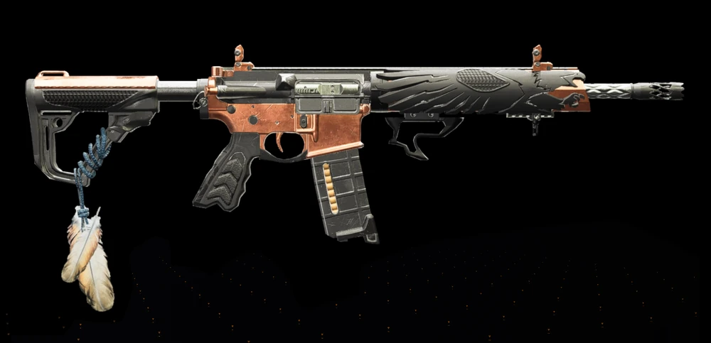
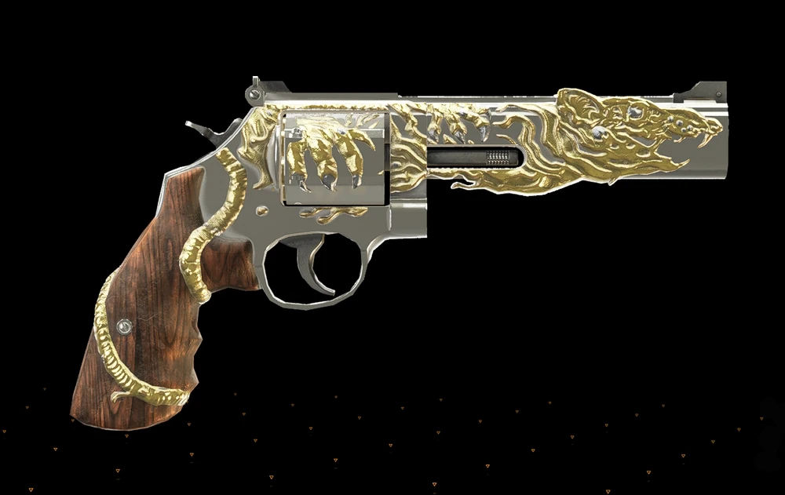
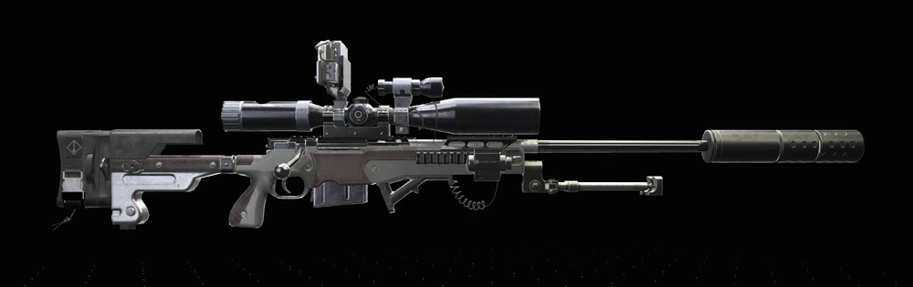

Melhor exótica DPS
Alta cadência e status: A Ouroboros é hoje a melhor escolha para builds agressivas, com alta cadência, aplicação constante de status e excelente desempenho em incursões e conteúdo PvE avançado.
As exóticas são peças-chave do endgame em The Division 2. Nesta página você encontra as armas mais relevantes do jogo, com foco em onde farmar, como utilizá-las em builds e como otimizar sua rotina semanal.
Alta cadência e status: A Ouroboros é hoje a melhor escolha para builds agressivas, com alta cadência, aplicação constante de status e excelente desempenho em incursões e conteúdo PvE avançado.
Eagle Bearer e Ravenous continuam sendo escolhas fortes para jogo em grupo, oferecendo sobrevivência, dano consistente e utilidade em mecânicas de raid e combate prolongado.
A Regulus exige coordenação, progressão em projetos e participação ativa em raids, sendo uma das exóticas mais demoradas de conquistar no conteúdo endgame.
Estas são as exóticas mais importantes do endgame. Cada uma atende a um estilo de jogo específico e pode ser decisiva em raids, incursões, lendárias ou builds focadas em dano e sobrevivência.


Mira: +15% Chance de crítico
TenacidadeÉ obtido principalmente como recompensa na raide Operação Horas Sombrias (Operation Dark Hours), no baú final ou drop de chefes. Também pode cair, com chances menores, na Zona Cega (DZ) e em Caches de Equipamento de Inverno durante eventos sazonais específicos.


Geki e FrekiPrincipalmente na Raid Operação Cavalo de Ferro (Iron Horse Raid), com maior chance nos chefes finais e no baú de recompensa. Também pode ser obtida, embora raramente, como loot exclusivo na Zona Cega (Dark Zone) ou através de Caches Exóticos.


RegicídeoA Regulus é fabricada na Estação de Criação após obter seu projeto, o qual é liberado ao completar a incursão Operação Cavalo de Ferro (Operation Iron Horse) e realizar projetos específicos de objetivo.

Drop exclusivo na Incursão "Paraíso Perdido", derrotando chefes ou no baú final.


Caçador de FerasDropa exclusivamente de chefes nomeados em missões de dificuldade Lendária ou no 10º andar do The Summit (Ápice) no modo Lendário. A taxa de queda é de aproximadamente 5% em chefes lendários. Ela não é afetada por loot direcionado.

Precisa montar a arma na bancada de criação usando peças obtidas ao completar missões e fortalezas invadidas pelos Patas Negras (Black Tusk) no Mundo Tier 5. A primeira peça é obtida desmontando a sniper Adrestia SR1 na fortaleza Bacia das Marés, seguida por partes obtidas nas fortalezas Capitólio, Bacia das Marés e Terminal de Água Branca, todas invadidas pelos Patas Negras.
Farmar exóticas no endgame não depende apenas de sorte. Com uma rotina bem definida, escolha correta de atividades e organização do grupo, é possível aumentar significativamente suas chances de drop e otimizar o tempo de jogo.
O próximo passo ideal é expandir o catálogo completo e ligar cada exótica às builds e atividades mais relevantes do portal.